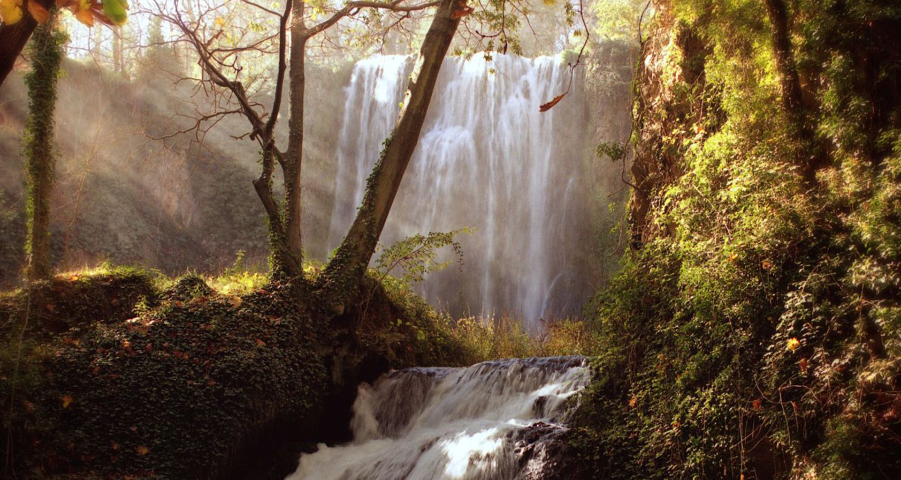
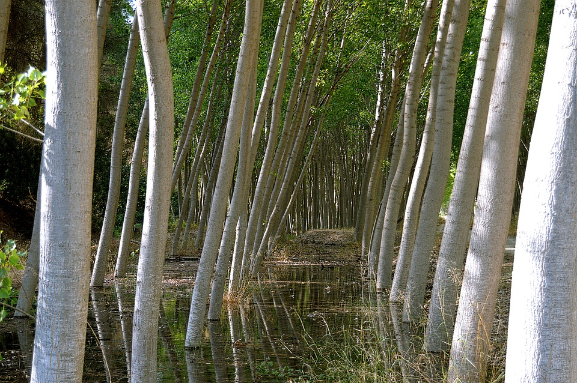

El monasterio de Piedra es un establecimiento turístico ubicado en un antiguo monasterio cisterciense que se halla en el municipio zaragozano de Nuévalos en la Comarca de Calatayud, en Aragón (España).
Dedicado a Santa María la Blanca, fue fundado en 1194 por trece monjes cistercienses venidos del Monasterio de Poblet, en el antiguo castillo de Piedra Vieja y junto al río Piedra. Se abandonó en 1835 debido a la desamortización de Mendizábal, comprado por un particular cinco años después y reconvertido en establecimiento turístico. Se catalogó como Monumento Nacional el 16 de febrero de 1983. Eclesiásticamente está incluido en el Arciprestazgo del Alto Jalón, Diócesis de Tarazona. Es uno de los enclaves turísticos más visitados de Aragón.
La construcción del cenobio se desarrolló a lo largo de tres etapas:
Al recinto amurallado se accedía por la torre medieval del homenaje y la iglesia, destruida en los primeros decenios de 1800, comunicaba con el claustro abierto de grandes arcos apuntados y sus capiteles con labrados follajes imitados del bizantino, así como con las distintas dependencias. También destaca la magnífica escalera principal que se despliega en dos anchos ramales sostenida toda por arcos y cobijada por una hermosa bóveda.
Todo un mundo de criaturas y criaturas y plantas pueblan nuestro parque:
En el incomparable marco del Monasterio de Piedra, con un río de gran calidad de aguas y una rica biodiversidad como es el Piedra.
Puede apreciarse el alto valor ecológico, paisajístico y cultural del río Piedra y sus riberas. Varios paneles ilustran las distintas especies como el sauce, el chopo, el álamo, el fresno y el olmo, con especies propias de aves como el martín pescador, el mirlo acuático o el pito real, y de especies acuáticas que demuestran la pureza de sus aguas, como el barbo, la tenca, la trucha, la madrilla o el tan escaso cangrejo autóctono.
Dichos paneles reflejan la ficha técnica de algunas de estas especies emblemáticas con textos, fotografías, reproducciones de los mismos en resina y el texto en Brailledispersos por todo el parque para disfrute de todos los visitantes.
FLORA
Romero
Meacamas
Mandrágora
Chopo
Olivo
FAUNA
Búho
Buitre
Foglet
Grifo
Dragón
La comunidad de Wikiloc se ha animado a compartir varias rutas que pueden ser de utilidad a todos nuestros visitantes:
L-V 08:00/21:00
S-D 07:30/22:00
L-V 08:30/20:00
S-D 08:00/21:00
Niños
Adultos
Tarifas esp.
C.Joven
Jubilados
5€
8€
6€
3€
Para asegurarse la plaza en su visita, no dude en hacer una reserva a su nombre y le atenderemos encantados: